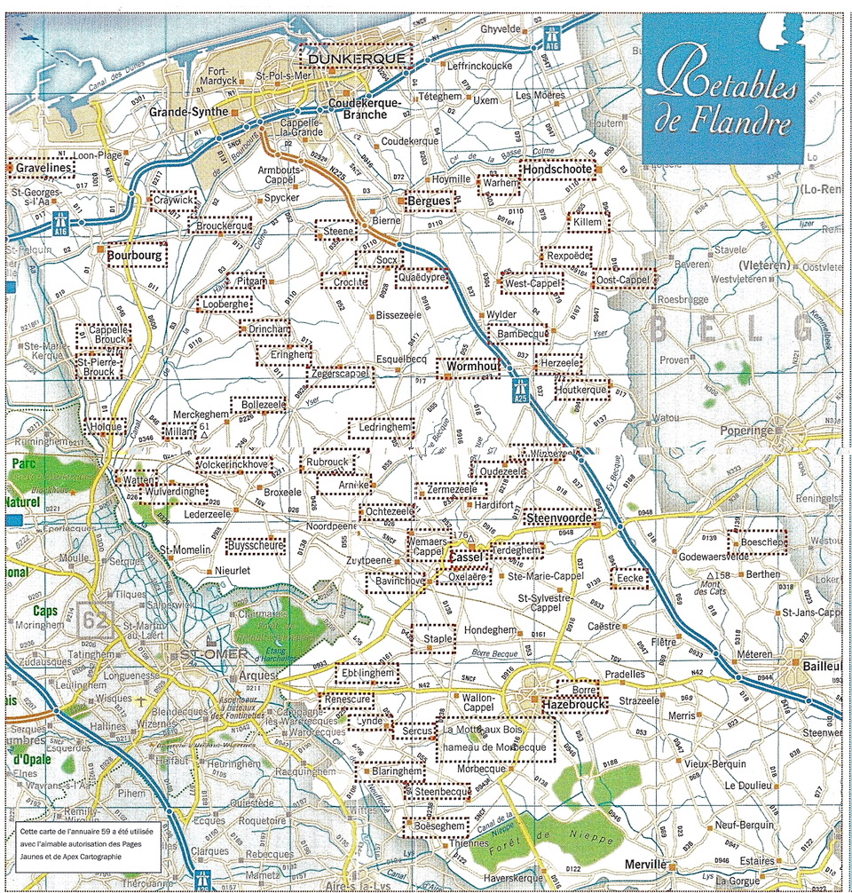
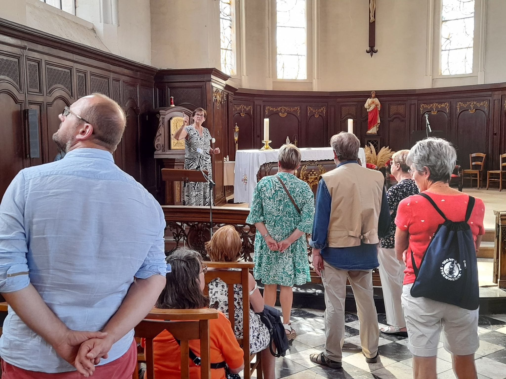
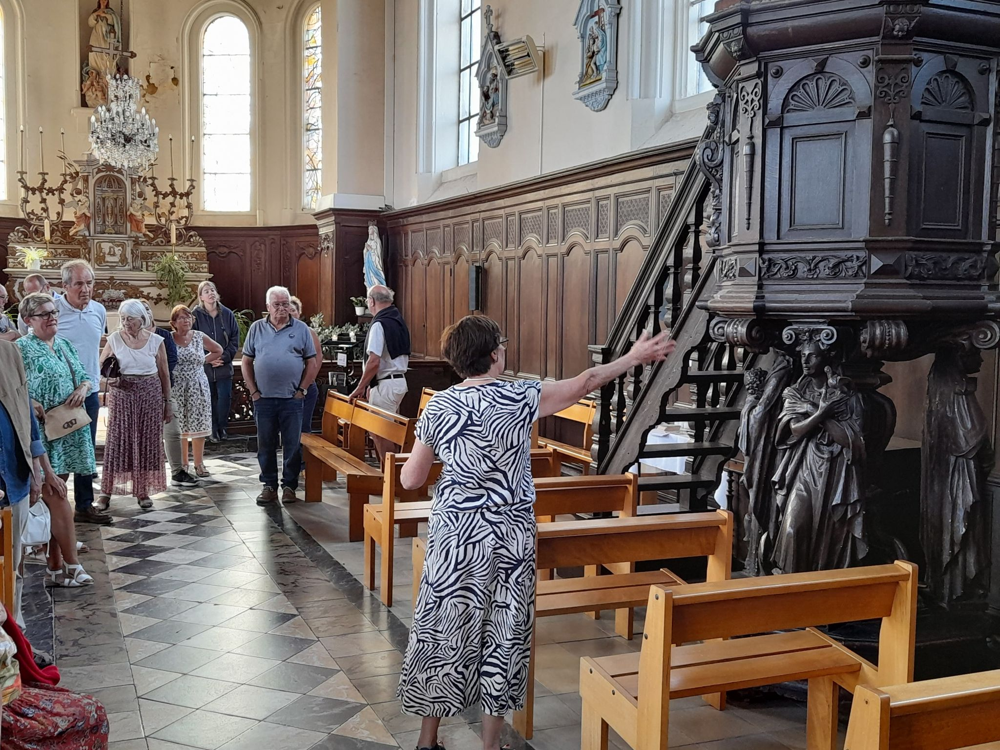
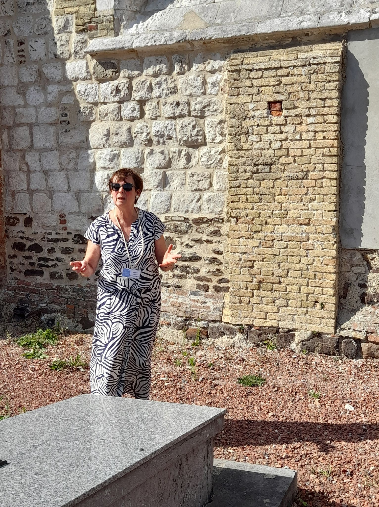
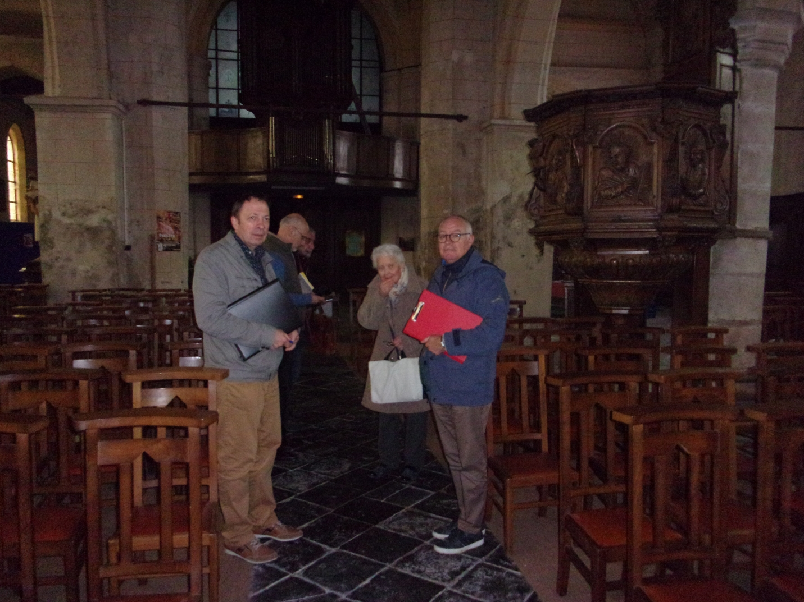
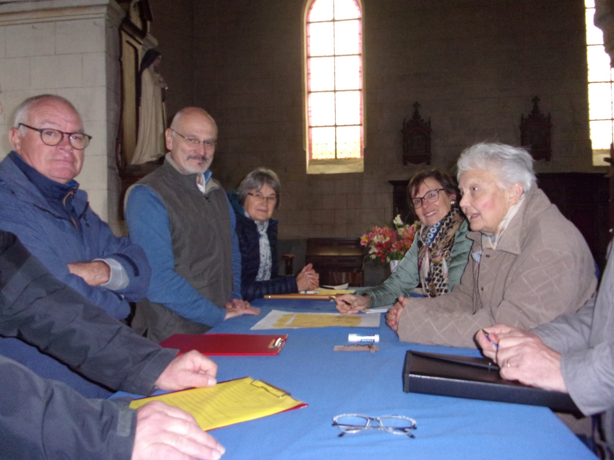
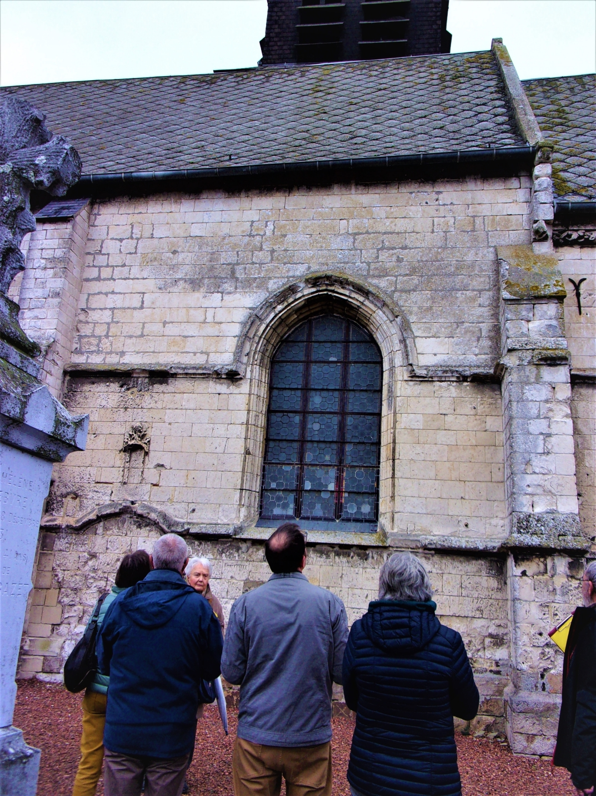

Visites des églises
Chemin des Retables de Flandre
Le calendrier de visite des églises pour l'été 2026 est disponible ci-dessous.
Calendrier des visites 2026
Carte des retables en Flandre
Session de formation des guides 2025–2026
Du 2 octobre 2025 au 12 février 2026 — Dunkerque et Hazebrouck
Une nouvelle session de formation des guides de l'association RETABLES de FLANDRE a réuni neuf futurs guides et douze guides expérimentés venus approfondir leurs connaissances.
Voir le programme de formation


Visites de l'été 2025
Dimanche 7 septembre 2025
Découverte de deux églises de Flandre intérieure : à Steenvoorde, l'église Saint-Pierre avec sa haute flèche de 92 m ; à Volckerinckhove, l'église romane remarquable par ses poutres sculptées et ses fonds baptismaux.

Steenvoorde

Volckerinckhove
Dimanche 31 août 2025
Visite de deux églises de Flandre intérieure : à Borre, l'église Saint-Jean-Baptiste avec sa tour de guet transformée en clocher ; à Cassel, la collégiale Notre-Dame de la Crypte, classée monument historique.

Borre

Cassel
Dimanche 24 août 2025
Découverte de deux églises emblématiques : à Bollezeele, l'église Saint-Wandrille avec son riche mobilier classé ; à Killem, l'église Saint-Michel et ses retables baroques.

Bollezeele

Killem
Dimanche 17 août 2025
À Herzeele, l'église Notre-Dame de l'Assomption, église-halle en briques du XVIe siècle avec ses retables classés Monuments Historiques.

Dépliants des visites — Juillet 2025
Église de Wormhout — 13 juillet
Télécharger le dépliantÉglise de Pitgam — 20 juillet
Télécharger le dépliantÉglise de Rexpoëde — 27 juillet
Télécharger le dépliantDépliants — Hondschoote et Oudezeele
Visites guidées
Renescure — 28 août 2022
Guide : Francine Boddaert — Photos : Hervé Devassine



Boëseghem — 21 octobre 2021
Visite de l'église Saint-Léger par Aïda Tellier — Photos : Françoise FAES


